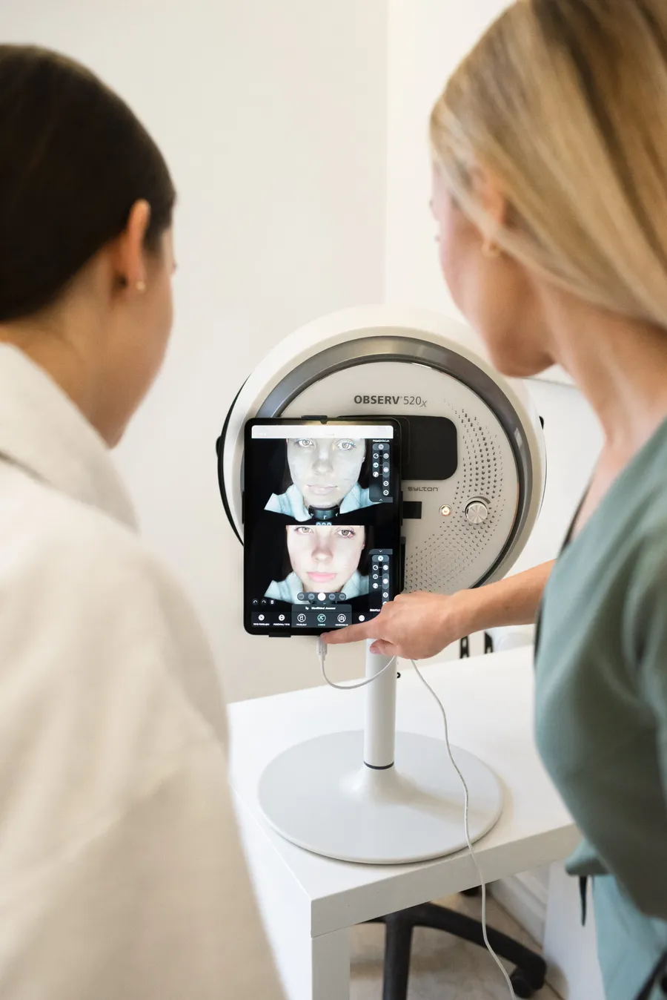
Diagnostyka cery
Observ 520x pokazuje to, czego nie widać gołym okiem: 8 trybów światła i zdjęcia przed i po.
Hotel Gdańsk Boutique, 5. piętro · ul. Szafarnia 9
Zabiegi kosmetologiczne i technologie hi-tech połączone z relaksem, wellness i longevity. Druga, po Sopocie, lokalizacja Baloli - dla mieszkańców Trójmiasta i gości hotelu.
Konsultacja kosmetologiczna z diagnostyką cery jest częścią każdego zabiegu. Dzięki niej plan pielęgnacji odpowiada na potrzeby skóry, a nie na modę.

Observ 520x pokazuje to, czego nie widać gołym okiem: 8 trybów światła i zdjęcia przed i po.
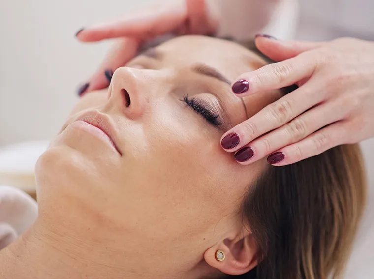
Rozjaśnianie przebarwień, kosmetyka twarzy, szyi i dekoltu, oxybrazja, masaż Kobido.
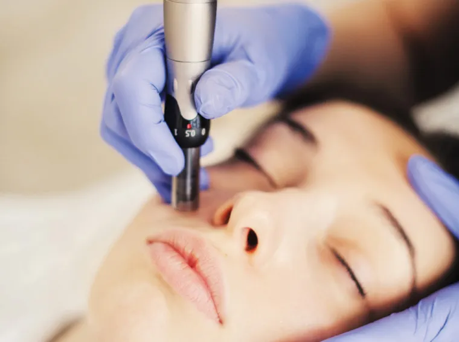
Dermapen, radiofrekwencja mikroigłowa Vivace, Geneo, Bloomea, termolifting Zaffiro.
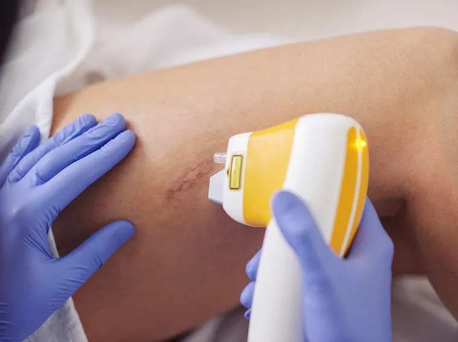
Zamykanie naczynek i depilacja laserowa MeDioStar Next, także na opaloną skórę.
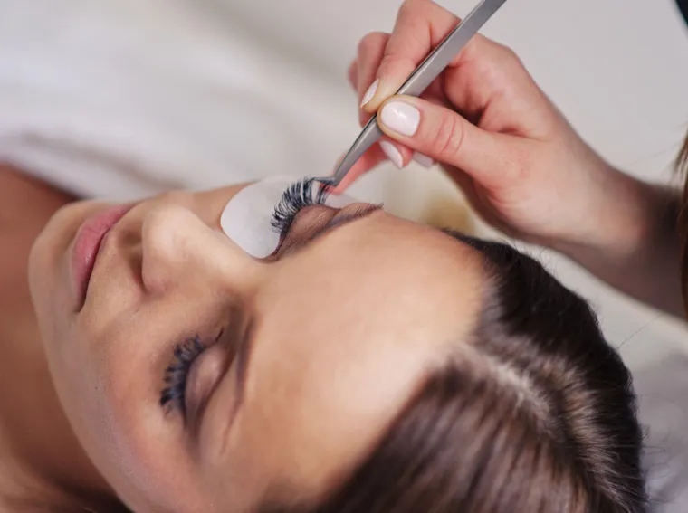
Laminowanie i botox rzęs, przedłużanie i zagęszczanie, henna i regulacja brwi.
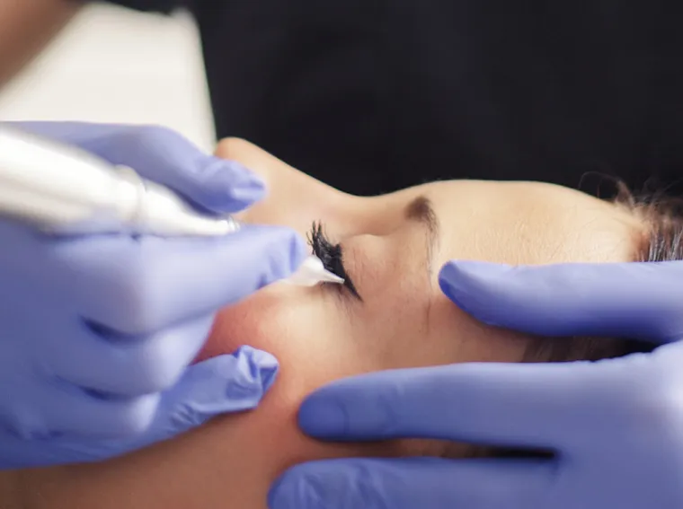
Usta i brwi o idealnym kształcie i kolorze przez całą dobę, bez codziennego malowania.
Lista na podstawie oferty Balola Sopot. Zakres zabiegów w Gdańsku do potwierdzenia.
Oczekujesz efektów od razu, nie po ostatnim z dziesięciu zabiegów. Dlatego stawiamy na urządzenia i dermokosmetyki o potwierdzonej skuteczności i na plan, który ma sens dla Twojej skóry.
Nieinwazyjne urządzenia, które dają widoczny efekt bez długiej rekonwalescencji. Wybrane z wyposażenia Baloli.
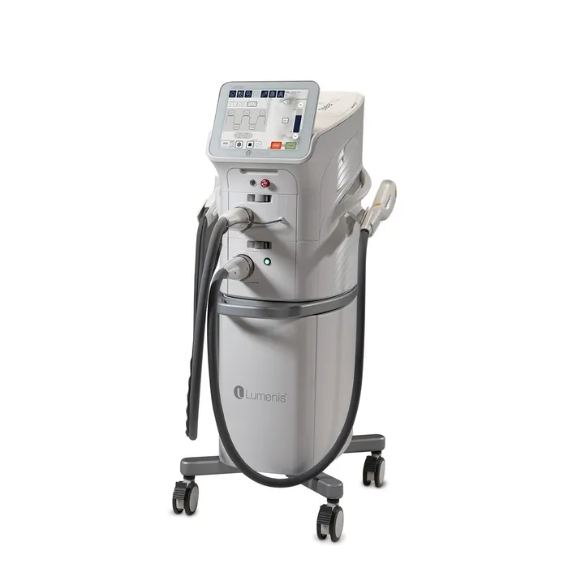
Modułowy system Lumenis: światło IPL i laser frakcyjny ResurFX na przebarwienia, naczynka i fotoodmładzanie.
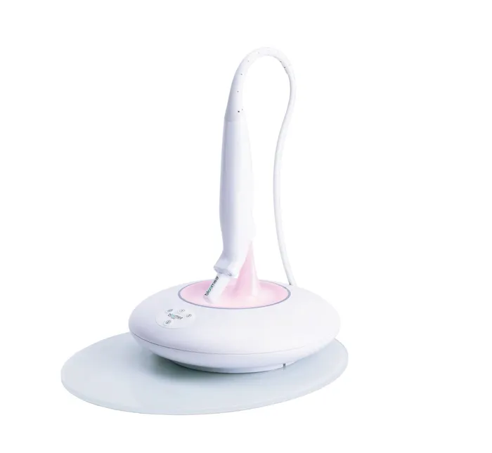
Makroeksfoliacja, mikrowibracje i światło czerwone. Efekt zbliżony do resurfacingu, bez bólu i przerwy.
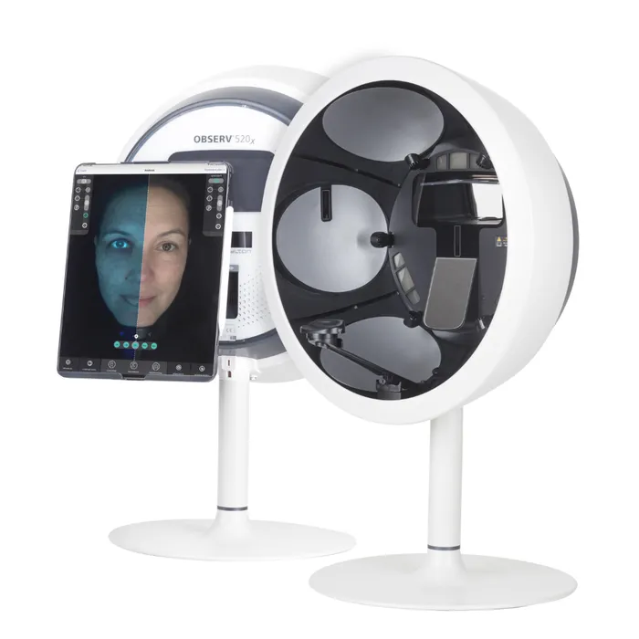
Diagnostyka skóry w ośmiu trybach oświetlenia, z raportem i porównaniem przed i po.
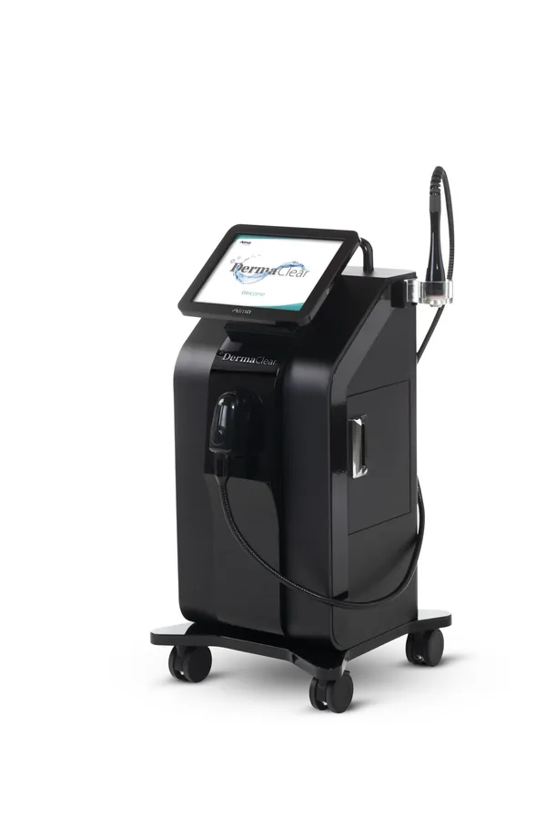
Hydrodermabrazja Alma Lasers: głębokie oczyszczenie, odżywienie i nawilżenie w jednym zabiegu.
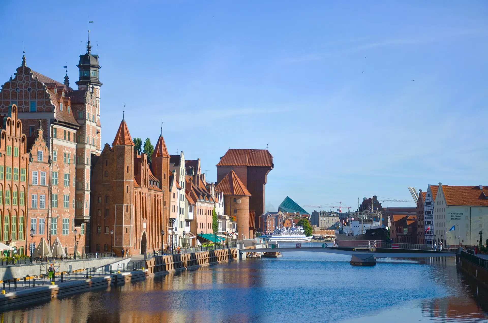
Balola Gdańsk mieści się w Hotelu Gdańsk Boutique przy ul. Szafarnia 9, kilka kroków od Głównego Miasta. Zabiegi kosmetologiczne łączymy tu z relaksem, wellness i longevity, czyli troską o kondycję skóry i samopoczucie na lata, a nie tylko na jeden wieczór.
Serie zabiegów, diagnostyka i plan pielęgnacji prowadzone przez kosmetologów Baloli. Wizyty po rezerwacji w Booksy.
SPA jest w tym samym budynku. Zabieg na twarz po podróży albo chwila relaksu przed wieczorem w mieście. Strona i rezerwacja także po angielsku.
Balola powstała w Sopocie z myślą o kobietach aktywnych, wymagających i świadomych. U podstaw leżą osobiste doświadczenia i długie poszukiwania skutecznych rozwiązań kosmetologicznych.
Salon prowadzi mgr Marta Socha-Kilanowska, kosmetolog, biotechnolog i podolog. Każdy przypadek traktuje holistycznie, bo skóra jest lustrem organizmu, a efekt zabiegu zależy też od pielęgnacji w domu.
Balola Sopot, ul. Tadeusza Kościuszki 4/1/BWizyty po rezerwacji. Termin i zabieg wybierzesz w Booksy, a na pierwszej wizycie zaczniemy od bezpłatnej konsultacji.
Zarezerwuj w BooksyPytania: +48 58 341 30 71 · sopot@balola.pl